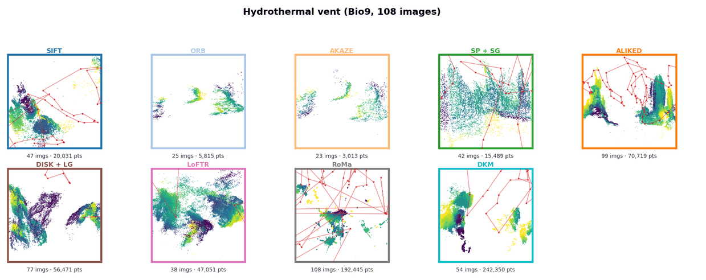

PEER-REVIEWED · ACCEPTED AT IEEE OCEANS 2026
Feature Matching for Ocean Robotics: A Structure-from-Motion Benchmark Across Marine, Polar, and Aerial Datasets
A controlled comparison of nine classical and learned feature-matching pipelines inside one COLMAP SfM framework, on a Svalbard glacier, a deep-sea hydrothermal vent survey and a heritage-building control. Core finding: registration completeness alone overstates reconstruction quality — on the vent survey RoMa registers all 108 images, yet 28% of its adjacent camera pairs disagree with the other pipelines' consensus by more than 5×; ALIKED registers 99 with no such disagreement, in 27 minutes instead of 9.1 hours.
